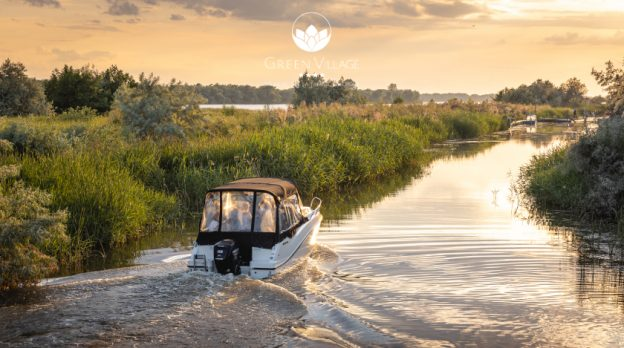
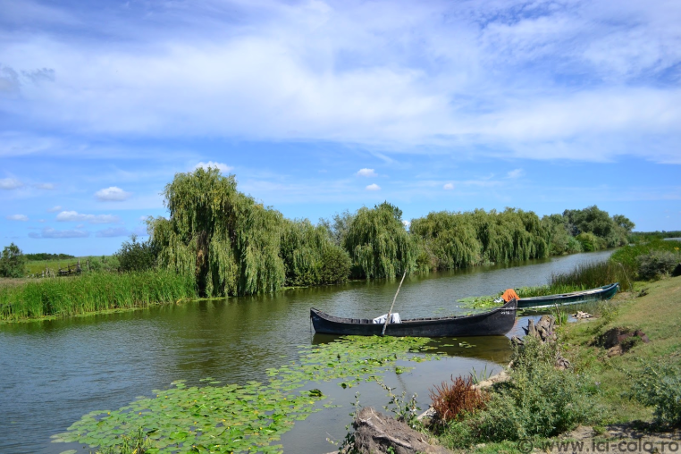
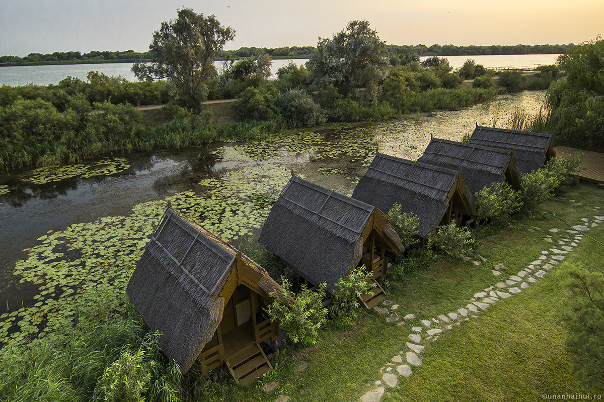

Delta Dunării este una dintre cele mai importante rezervații naturale din Europa și este inclusă în Patrimoniul Mondial UNESCO. Acest ecosistem unic este situat în partea de nord-vest a României și este rezultatul interacțiunii dintre fluviul Dunărea și Marea Neagră.
Delta Dunării este cunoscută pentru biodiversitatea sa bogată, cu peste 300 de specii de păsări și numeroase specii de plante și animale rare. Este o destinație preferată pentru observarea păsărilor și pentru plimbări cu barca în mijlocul peisajelor naturale spectaculoase.
Pe lângă frumusețea sa naturală, Delta Dunării este și un important habitat pentru numeroase specii de animale, inclusiv vidre, șerpi de apă și pisici sălbatice. De asemenea, este o destinație excelentă pentru iubitorii de pescuit sportiv și pentru cei pasionați de fotografie de natură.

Delta Dunării oferă numeroase atracții pentru turiști, inclusiv plimbări cu barca în labirintul de canale, observarea păsărilor în rezervații naturale și relaxare în mijlocul naturii. Există, de asemenea, posibilități de a practica pescuitul sportiv și de a explora satele tradiționale din zonă.
Unul dintre punctele de atracție cele mai cunoscute este Sulina, un oraș cu o istorie bogată și un port important pentru navigația pe Dunăre. De aici, turiștii pot lua excursii către punctele cele mai interesante din Deltă și pot explora viața sălbatică din zona protejată.

Delta Dunării este un ecosistem fragil care necesită protecție și conservare pentru a supraviețui. Diverse organizații și agenții guvernamentale lucrează împreună pentru a menține echilibrul natural al Deltei și pentru a proteja speciile de plante și animale amenințate.
Proiectele de conservare includ monitorizarea populațiilor de animale, educație pentru comunitățile locale și promovarea turismului responsabil. Prin eforturile noastre comune, putem asigura că Delta Dunării va rămâne o bijuterie naturală pentru generațiile viitoare.